How to describe space-time manifold?
Physics in description is easier to understand.
Definations of some physical quantities and operators are listed below.
Here we have
To calculate volume, the volume element should be defined first in order to integrate. Before that, orientation on manifolds is to be figured out.
On an oriented manifold with metric, the defined volume element (a n-form) should be compatible with the orientation and also determined by the metric. [1]
Introducing those requirements, a compatible volume element is

Alternatively, this can be expressed in the way Ellis used in arXiv:gr-qc/9812046v5.
![\eta_{abcd} = \eta_{[abcd]}, \quad \mathrm{with} \eta_{0123} = \sqrt{|\mathrm {det} g_{ab}|}](../_images/math/1f76c02eb6c9622e751fdf95b2c3a3bd80bd9ec2.png)
Induced volume element  is defined use the normal vector of the hypersurface,
is defined use the normal vector of the hypersurface,

| [1] | For more information, check out Canbin Liang’s book. Volume 1, page 115. |
4-velocity of observed matter is

with 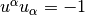,  is the proper time along the worldlines of investaged matter.
is the proper time along the worldlines of investaged matter.
We can use 4-velocity to project variables to parts that is parallel to 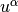 and parts that is orthogonal to .

Some properties of the two projections.
![& U^a_{\phantom a b} U^b_{\phantom bc} = U^a_{\phantom a c} , U^a_{\phantom a a} = 1 , U_{ab}=g_{ac} U^c_{\phantom cb} , U_{ab} u^b = - g_{ac} u^c u_b u^b = u_a \\
& h^a_{\phantom ab} = g^{ac} h_{cb} = \delta^a_{\phantom ab} + u^a u_b = \delta^a_{\phantom ab} - U^a_{\phantom ab} \\
& h^a_{\phantom a c}h^c_{\phantom c b} = (\delta^a_{\phantom ac} - U^a_{\phantom ac})(\delta^c_{\phantom cb} - U^c_{\phantom cb}) = \delta^a_{\phantom ab} - U^a_{\phantom ab} = h^a_{\phantom ab} \\
& h^a_{\phantom aa} = 4-1 = 3 , h_{ab}u^b = 0](../_images/math/8db67ce9eabe93be1c06fcd7b31730e8df5ab4f8.png)
This is the derivative along the fundamental worldlines (projection on the worldlines),
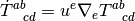
 )¶
)¶This derivative is the project orghogonal to the normal vector of the hyperspace or orthogonal to the observer’s 4-velocity or along the tagent of the hyperspace.

Orthogonal projection of vectors

And the orthogonally projected symmetric trace-free part of tensors
![T^{<ab>} = [h^{(a}_{\phantom {(a} c} h^{b)}_{\phantom{b)}d} - \frac{1}{3} h^{ab} h_{cd} ] T^{cd}](../_images/math/95f88eefc8e5aa1667efea45e88e3430c7205f93.png)
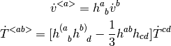
 ,
,  and vanish.
and vanish.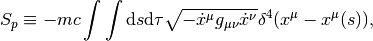
in which 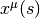 is the trajectory of the particle. Then the energy density  corresponds to 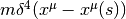.
corresponds to 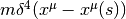.
The Largrange density
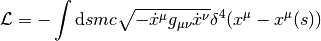
Energy-momentum density is  is
is
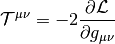
Finally,

 is Killing vector field, 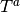 is the tangent vector of geodesic line. Then
is Killing vector field, 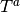 is the tangent vector of geodesic line. Then  , that is 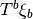 is a constant on geodesics.
, that is 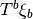 is a constant on geodesics.
In geometrical optics limit, the angular frequency  of a photon with a 4-vector
of a photon with a 4-vector  , measured by a observer with a 4-velocity 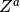, is
, measured by a observer with a 4-velocity 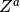, is  .
.
“A stationary spacetime admits a timelike Killing vector field. That a stationary spacetime is one in which you can find a family of observers who observe no changes in the gravitational field (or sources such as matter or electromagnetic fields) over time.”
When we say a field is stationary, we only mean the field is time-independent.
“A static spacetime is a stationary spacetime in which the timelike Killing vector field has vanishing vorticity, or equivalently (by the Frobenius theorem) is hypersurface orthogonal. A static spacetime is one which admits a slicing into spacelike hypersurfaces which are everywhere orthogonal to the world lines of our ‘bored observers’”
When we say a field is static, the field is both time-independent and symmetric in a time reversal process.
{kind=link}